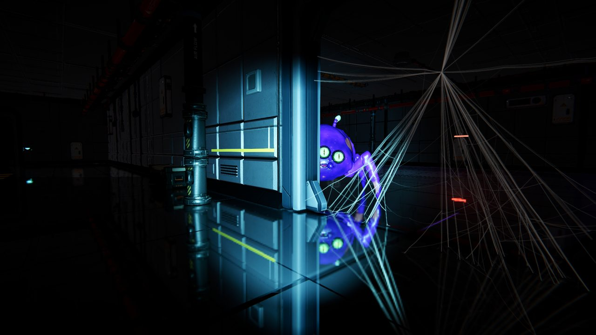
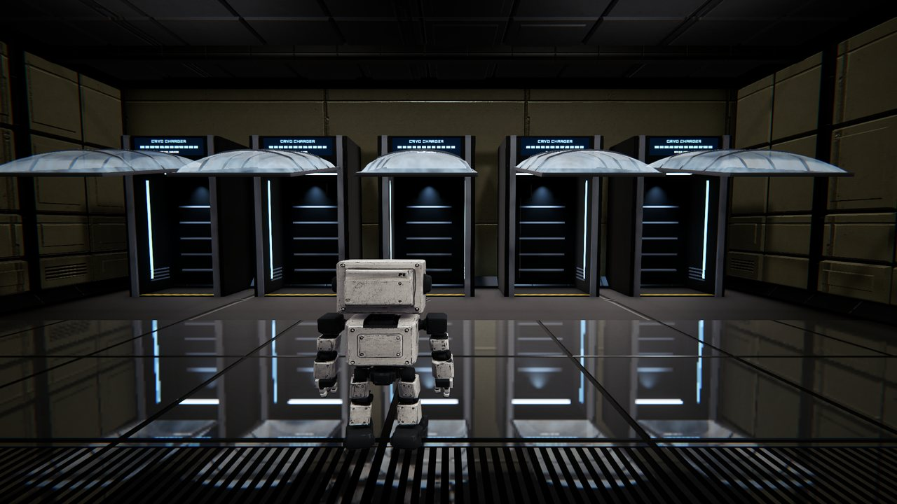

Get help
Support runs through the game's Steam discussions, so answers help everyone who hits the same problem.
Check the fixes
Most problems (joining friends, voice chat, performance) have a fix further down this page.
Post in Bug Reports
Open the Steam discussions. Say what happened, the ship size, and whether you hosted or joined.
Attach your log
After a crash or a bug, attach your Player.log. It tells us what the game was doing.
Find the log: press Win + R, paste this, press Enter.
%USERPROFILE%\AppData\LocalLow\NerdyGuyGames\SystemsCritical
Send Player.log, plus Player-prev.log if the game crashed and you restarted it. Upload them to a file host and post the link.
Common fixes
Tap a problem to open it.
My friend's invite doesn't work
- Start the game first, then accept the invite from the Steam overlay (Shift + Tab). Joining from an invite while the game is closed isn't supported yet.
- The host opens a crew lobby from the main menu, then invites from the overlay's friends list.
- Everyone needs the same version: let Steam finish any update before playing.
- Still stuck? Restart Steam on both PCs and try again.
Nobody can hear me / I can't hear anyone
- Hold V to talk to robots near you, or hold T to talk to the whole crew over ship comms.
- Open Settings → Voice, pick the right microphone, and turn on Hear yourself (mic test) to check it.
- Proximity voice fades with distance and is muffled through walls and shut doors. That's on purpose.
- Check that Windows allows apps to use your microphone (Settings → Privacy → Microphone).
The game runs slowly
- Lower Settings → Video → Quality, and pick a lower resolution.
- Larger ships are heavier. Try a Small or Medium ship.
- Update your graphics driver (NVIDIA, AMD or Intel's own site).
- Close browsers and recording software while you play.
The game won't start or crashes on launch
- In Steam: right-click Systems Critical → Properties → Installed Files → Verify integrity of game files.
- Update your graphics driver and Windows.
- Make sure your PC meets the minimum requirements: Windows 10 64-bit and DirectX 11.
- Still crashing? Post in Bug Reports with your log files.
Something looks or plays wrong
Refunds

System requirements
Windows only. Online play needs Steam.
| Minimum | Recommended | |
|---|---|---|
| OS | Windows 10 64-bit | Windows 10/11 64-bit |
| Processor | Intel Core i5-8400 / AMD Ryzen 5 2600 | Intel Core i5-10400 / AMD Ryzen 7 3700X |
| Memory | 8 GB RAM | 16 GB RAM |
| Graphics | NVIDIA GTX 1060 6 GB / AMD RX 580 8 GB | NVIDIA RTX 3060 / AMD RX 6600 XT |
| DirectX | Version 11 | Version 11 |
| Network | Broadband internet | Broadband internet |
| Storage | 4 GB | 4 GB |
| Target | 1080p, low settings | 1080p, high settings |
Controls
Keyboard and mouse. Controllers aren't supported yet.

Privacy
Systems Critical doesn't ask for, collect or sell your personal information.
- Settings and progress are saved on your own PC.
- Multiplayer and voice chat run through Steam's networking, directly between the players in a lobby. Voice isn't recorded or stored.
- The game uses your Steam ID only to load your own local profile and to show your name to your crew.
- The Unity engine may send anonymous technical data, such as hardware details and crash reports, to Unity Technologies.
Questions? Ask in the Steam discussions.